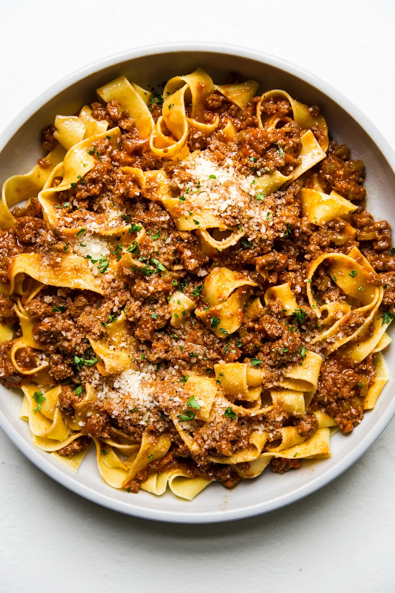

Bolognese

Description
Traditional pasta dish referred to as Raggu in Italy
Usually made with beef in a tomato based sauce
Ingredients
- Minced beef
- Two tins of chopped Italian tomatoes
- Tomato puree
- 1 onion
- Olive oil
- Mushrooms
- Italian herbs
- 3 table spoons of Port
Instructions
- Pre heat pan
- Add table spoon of olive oil
- Chop onions and add to pan
- Sweat off onions until soft
- Add minced beef
- Brown minced beef
- Chop mushrooms and add to pan
- After 5 minutes add two tins of chopped tomatoes and stir
- Season with Italian herbs
- Add 3 table spoons of Port
- Leave to cook down for 20 minutes to half an hour